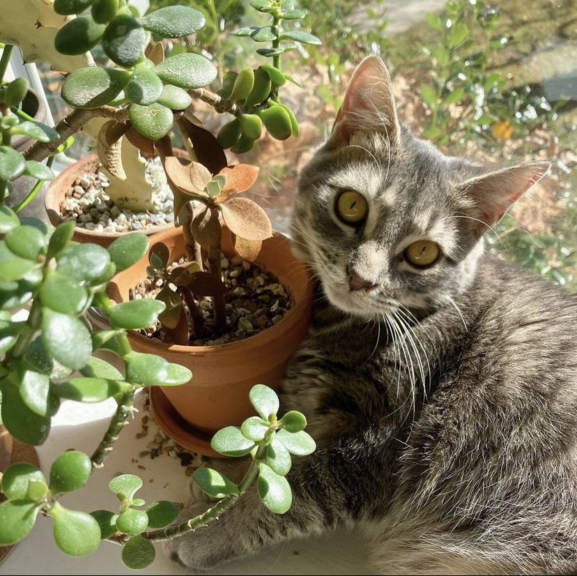
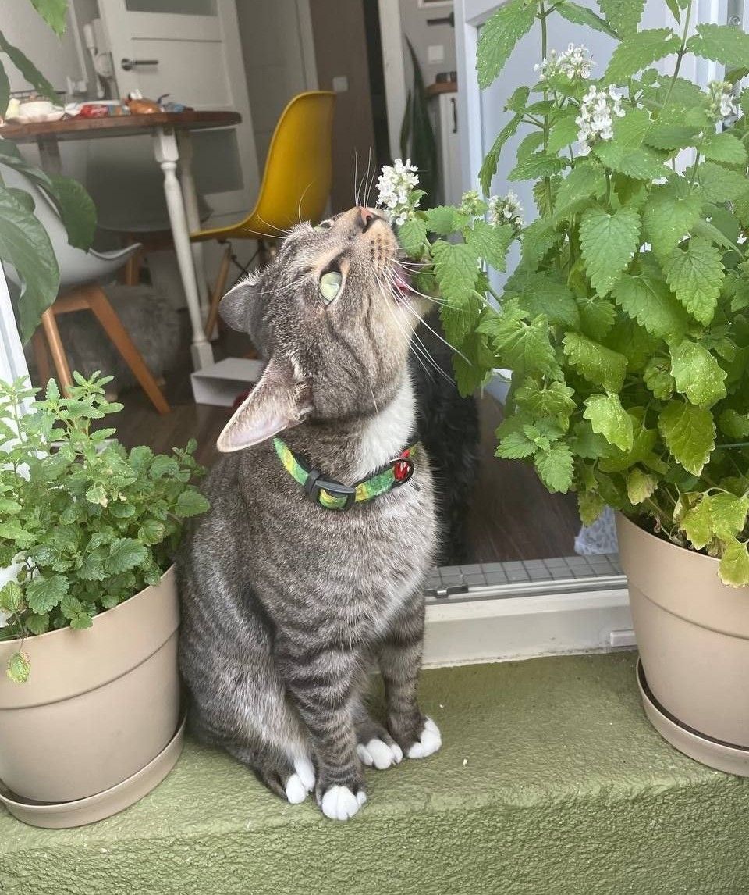
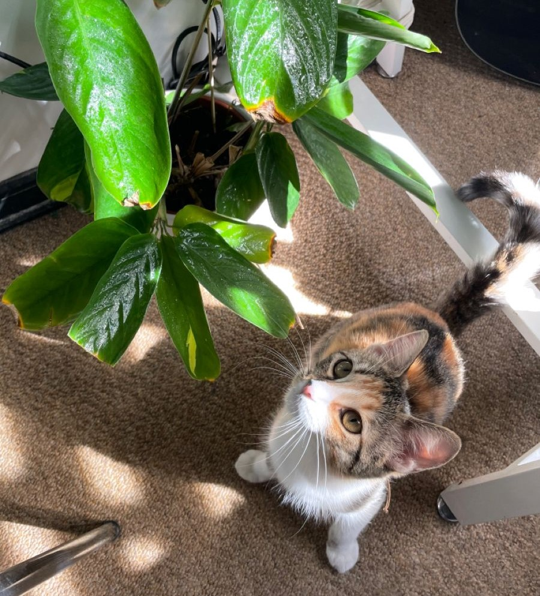
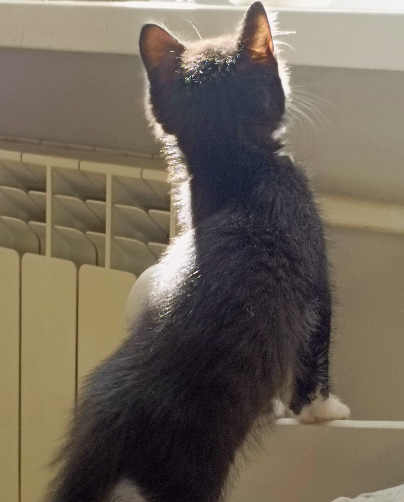
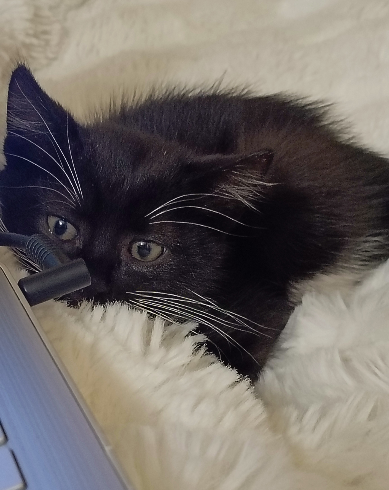

Если вы решили завести кошку, то должны не только обеспечить ей комфорт и уют, но и подумать о безопасности.
То, что безобидно для человека, может нанести серьезный вред здоровью животного.
В растениях содержатся самые различные биологически активные вещества, некоторые из которых обладают выраженным токсичным действием.
Есть такие, которые имеют горький вкус, грубую волокнистую структуру и при поедании могут вызвать избыточное слюнотечение или рвоту,
но при этом не будут ядовитыми и не приведут ни к каким тяжелым последствиям.
А бывают представители флоры, способные вызвать тяжелую интоксикацию, даже если питомец съел их в малом количестве.


Мы привыкли думать, что кошка – это маленький хищник, поэтому должна питаться только мясом и мясными продуктами.
Это действительно так, но иногда животному требуется употреблять и растительную пищу.
Тягу животного к растениям можно объяснить несколькими причинами:
1. В организме не хватает витаминов. Стремясь пополнить запас, кошка интуитивно пытается получить их из комнатных растений.
2. Стимулирование работы ЖКТ. Если питомец съел тяжелую пищу (например, натуральную), он чувствует дискомфорт и тяжесть в желудке.
Некоторые травы вызывают рвотный рефлекс, и таким образом кошка избавляется от неусвоенной еды.
3. В желудке скопилась шерсть. Вылизывая себя, коты и кошки могут проглатывать комочки собственных волос.
Здесь работает тот же принцип, что и с непереваренной пищей: растения способствуют очищению желудочно-кишечного тракта.
4. Игра. Яркая расцветка привлекает кошечек, особенно котят.
Играя с листиками лапкой, малыш может случайно или нарочно откусить кусочек растения.
5. Охотничий инстинкт. Удовлетворяя природную потребность в охоте, маленький хищник часто принимает красивый цветок за дичь.
6. Заражение паразитами. Кошки отлично чувствуют неполадки в организме. Некоторые растения вызывают рвотный рефлекс,
способствующий выходу гельминтов.
7. Стресс, патологии ЦНС. Переезд, смена владельца, появление нового члена семьи, громкие звуки – вот далеко не весь
перечень вызывающих стресс причин. Жевание растений успокаивает животных, так как помогает снять напряжение.


Это мой кот Уголек. Он любит грызть мои руки, провода и недавно начал проявлять интерес к растениям. Букеты стали в нашем доме табу,
а земля из цветочных горшков раскидывалась по всему подоконнику.
После того, как пострадал суккулент, я поняла, что от части цветов придется избавиться, чтобы не пострадал уже кот.
Фотографиями своих котов и историями про них можно поделиться по ссылке
, я буду очень рада их посмотреть <З
